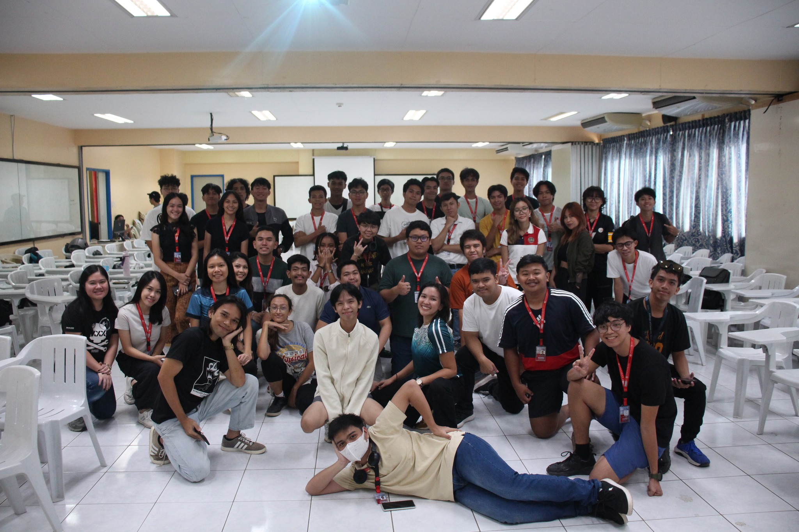

The Court
Sports play an equally important part in the life of a Silliman student. The campus boasts of facilities for ball games, swimming, contact sports, and archery. In the field of archery, Mark Javier, the lone Filipino male archer in the Beijing Olympics, is a fresh addition to the list of Sillimanian Olympians: archers Jennifer Chan and Lisa Ygnalaga and long jumper Simeon Toribio.
Esports Leaderboards
Organizer: Confederates Student Council
Date: August 19, 2024 – 5:00 PM
Involvement: Working Committe Member/Game host
This is my very first court entry. I joined as one of the hosts for the “Mobile Legends: Bang Bang” Elimination round. My role for this activity was to watch over and host one of the games for the elimination round of this tournament. I was tasked to host the last game of the round, to check if the players were abiding the rules to avoid any form of cheating and be the moderator during the game.
Hosting it was easy because I only had to open lobbies for the game, and I’ve already played Mobile Legends before. What really surprised me was while I was watching over the game, I’ve noticed that the playing style has changed so much. I think the most satisfying part of this activity is just being able to watch over others play and have fun. Throughout the activity, everyone was following the verbal rules as they only did friendly banters with each other which made the game even more fun.
The experience made me learn that e-sports environments doesn’t really need to be toxic to have fun. I can continue my involvement with this group my continuously hosting games for e-sports events. I can say that I’ve benefitted from this project by giving me a good source of entertainment and I would surely join these types of activities when given the chance.
Because of this activity, I am even more encouraged to continue getting involved in e-sports tournaments. First, these activities are fun to join, and I also got to know people with the same interests as me, which is playing MOBA games.

CCS Fitness Challenge
Organizer: Confederates Student Council
Date: August 20, 2024 – 7:30 AM
Involvement: Participant
I was able to attend the first CCS Fitness Challenge together with my classmates from CCS2 because Ma’am Yao required us to attend this event together with the Balik Talent Lecture. This Zumba event was hosted by the Confederates Student Council.
When I first saw the post on this event, I thought it would literally be a fitness challenge, like the ones you usually do in physical education classes. However, when I arrived, I didn’t expect that it would be a Zumba challenge. One person that really surprised me during the event was my classmate Milj. Because when I first talked to him, he sounded like he wasn’t really interested with dancing. But he destroyed my expectations when we started as he turned out to be an amazing dancer.
It’s really fun to have these events every once in a while. I can see the benefit of it through physical activity and overall, just having movement. Because, in our course we usually sit down a lot.
Because of this event, I was energized and ready for the day. I just wished we did more than doing Zumba dances. I am really looking forward for next year’s fitness challenges.

Ding Ibato
Organizer: DOST Scholars' Association of Silliman University
Date: November 13, 2024 – 3 PM
Involvement: Spectator
On November 13, the DOST Scholars’ Association of Silliman University hosted a dodgeball event at the Ravello Field. The event was for charity, and I went there to watch my friends play for a while.
Most of the participants that joined the event where from my college most probably because of the GE10 journal. But despite that, it was still really fun, and all teams really gave their all during the game. One game I watched was the team with one of my classmates who was a badminton athlete, their plays were good, but all that badminton training really did not translate to dodgeball, unfortunately they lost.
This dodgeball game was super fun and it’s really cool seeing the participants just enjoying the game. Although some of the teams were very competitive, there was no foul play or anything malicious.
Because of this activity, I realized that a lot of my friends are actually athletic and sporty. It has always been a stereotype online for people who are in computer science to be really unathletic but being in this event really changed my perspective.
Women’s 4 A-side park volleyball tournament
Organizer: Dumaguete City Tourism Office & 76th Charter Anniversary Dumaguete City
Date: November 18, 2024 – 6 PM
Involvement: Spectator
This volleyball tournament was hosted by the Dumaguete City Office for the 76th Charter Day Anniversary of Dumaguete City. This version of volleyball was only a 4 vs 4 with 2 additional substitutes and the games were played at the beach volleyball court at Pantawan People’s Park.
I never really planned to come to this event, I never even knew about it since I do not really play volleyball or even watch volleyball games often. But while I was wandering around Pantawan, it was just a coincidence that there was also a tournament here and I also thought It would be good for my journal. Anyways, while watching the game, I was really surprised to see one of my old high school friend as she was playing for the team from Foundation University and they were really good.
Watching this game was fun for me because of the style of playing in beach volleyball. I actually find it interesting how they could play so well on the sand because the surface isn’t fixed. It was also so cool seeing long rallies because you can really feel the thrill of the game.
Because I watched this volleyball match, I am more interested in exploring this type of volleyball. Even though I don’t really play volleyball, watching the game was fun, seeing their teamwork and versatility

1st Kagawad Lizza Perdices Badminton Tournament
Organizer: Team Sagarbarria
Date: November 23-24, 2024 – Whole Day
Involvement: Spectator
Last weekend, November 23 and 24, I watched the 1st Kagawad Lizza Perdices Badminton Tournament at the Riverside Courts Dumaguete. I was initially supposed to join this tournament but had conflicts with my weekend classes, so I only watched my relatives matches and I also happened to meet my high school badminton teammate as he was umpiring one of the matches.
The results of the tournament did not really surprise me because the athletes who won were already consistent in winning many local tournaments. It was really nice to see my old teammates as well as my cousins in this tournament, some of them were even assigned as umpires.
Being able to watch a badminton tournament is always a good experience for me because I have passion in this sport. This tournament in particular, amazed me because I got to see the strong players of Negros Oriental in the open category. There were also a lot of junior players that joined, this made me realize that the sport really is growing, and it is not looked at as a leisurely backyard game anymore.
Because of this tournament, I am even more encouraged to be more active in this sport. I want to engage in these activities and hopefully could find tournaments that will not be in conflict with my classes. Now the only problem would be finding a teammate.

All-Dumaguete Pickle Ball Challenge
Organizer: Dumaguete City Tourism Office & 76th Charter Anniversary Dumaguete City
Date: December 1, 2024 – Whole Day
Involvement: Spectator
One of the events for the 76th Charter Anniversary of Dumaguete City was a Pickle Ball tournament that was open to all citizen in Dumaguete. This event was hosted by the City Government and the Tourism Office and it took place at the Quezon Park.
I’ve always had this prejudice on this sport because before I would always refer to it as the mix of badminton and tennis for the old people. But honestly, it really isn’t that bad. I watched the game together with my mom because she did start playing this sport and was also supposed to join this tournament, but it conflicted with some of our schedules. But I do not regret watching this tournament, I even met a classmate who joined the tournament in the first day.
Nonetheless, I still enjoyed watching the game despite hating on this sport because the finals game that we watched was very fast and fun. Coincidentally, my mother knew the players in the finals match since they where also her lawn tennis partners. I guess that tennis skills can really translate into this sport.
Because of this activity, my perspectives on this sport really changed. I would really love to play this sport with my parents some time. I’d say learning this sport for me would be fairly quick since I have a background in lawn tennis. I would also love to play this game in the intramurals, if it will be added.

CCS CarShow Competition
Organizer: Confederates Student Council
Date: December 15, 2024 – 10 PM
Involvement: Spectator
My very last entry for this journal is this CarShow Competition hosted by the Confederates Student Council. This event was headed by kuya Alty from the athletics committee and the participants were all from our department, mostly first years.
I never really expected anything watching this car show, because I’ve never even played Roblox before. I thought it would just be a blocky game with very limited features. What surprised me was the detail of the cars in the game.
It was really fun watching my fellow CCS gamers participate in this game. Something that really changed by perspective with this game, was their dedication to grind and spend money in this game. It was amazing seeing them being creative with their car designs and parts choice. My personal favorite among the participants was the blue Koenigsegg car because it looked very flashy and the colors were really showing that he was a proud CCS student.
Because of this I watched this event, I realized how gamers can get really dedicated into their games even something like Roblox which for most is seen as a kid’s game. I really appreciate seeing their efforts into designing their cars. Overall, this car show was a great way to end my journal.